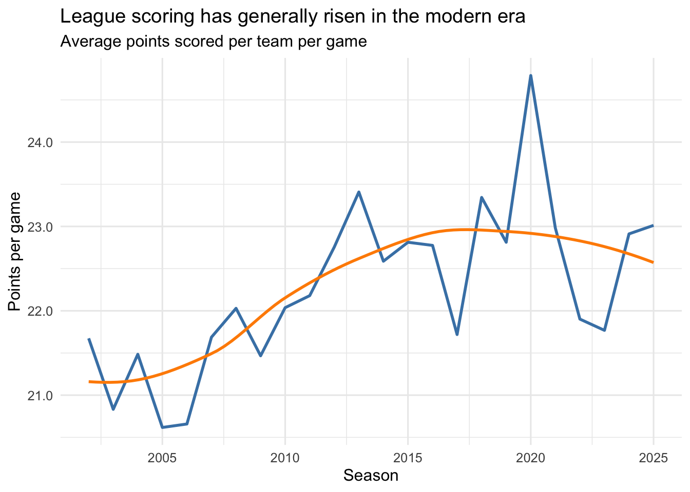
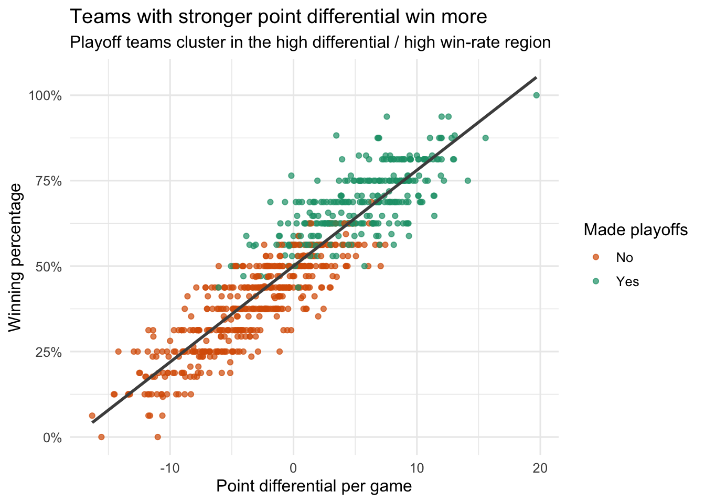
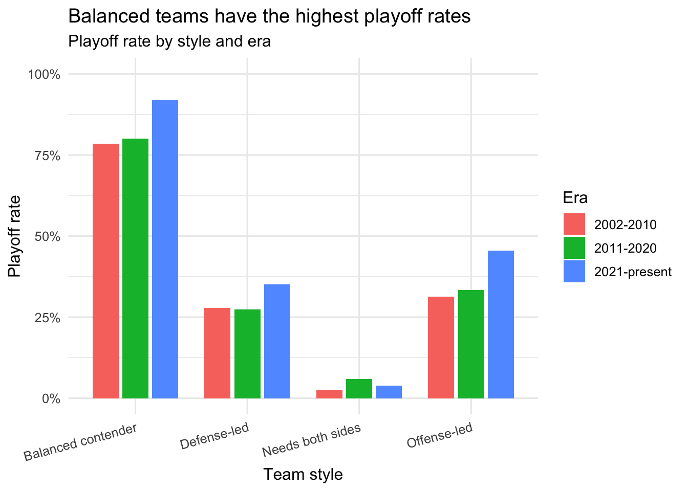
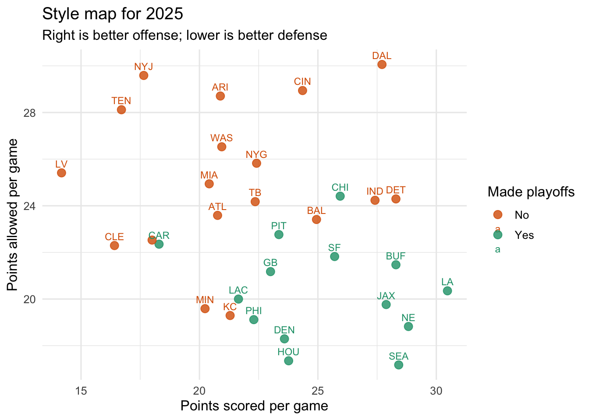

Filtered to completed team-seasons (games_played >= 16)
Created per-game metrics for fair comparisons across 16-game and 17-game eras:
points_for_pg
points_allowed_pg
point_diff_pg
Created a playoff_flag indicator
Built team style categories by comparing each team to league averages in the same season:
Balanced contender
Offense-led
Defense-led
Needs both sides
Code
team_season |>count(style, sort =TRUE)
# A tibble: 4 × 2
style n
<chr> <int>
1 Balanced contender 242
2 Needs both sides 236
3 Defense-led 160
4 Offense-led 130
A quick descriptive check: point differential and winning percentage are strongly related.
Code
team_season |>summarise(correlation =cor(point_diff_pg, win_pct, use ="complete.obs"))
# A tibble: 1 × 1
correlation
<dbl>
1 0.911
4. Data Visualization and Storytelling
Figure 1. Scoring trend in the NFL
Code
ggplot(story$league_trend, aes(x = season, y = avg_points_for_pg)) +geom_line(color ="steelblue", linewidth =1) +geom_smooth(method ="loess", se =FALSE, color ="darkorange", linewidth =1) +labs(title ="League scoring has generally risen in the modern era",subtitle ="Average points scored per team per game",x ="Season",y ="Points per game" ) +scale_y_continuous(labels =number_format(accuracy =0.1)) +theme_minimal(base_size =12)

Scoring environments have changed across eras, which is why per-game metrics and season-relative style definitions are useful.
Figure 2. Point differential is the backbone of winning
Code
ggplot(team_season, aes(x = point_diff_pg, y = win_pct, color = playoff_flag)) +geom_point(alpha =0.7) +geom_smooth(method ="lm", se =FALSE, color ="gray30", linewidth =1) +scale_color_manual(values =c("TRUE"="#1b9e77", "FALSE"="#d95f02"), labels =c("No", "Yes")) +scale_y_continuous(labels =percent_format(accuracy =1)) +labs(title ="Teams with stronger point differential win more",subtitle ="Playoff teams cluster in the high differential / high win-rate region",x ="Point differential per game",y ="Winning percentage",color ="Made playoffs" ) +theme_minimal(base_size =12)

This plot shows that total team quality (scoring more while allowing less) is tightly connected to regular-season success.
Figure 3. Which team style makes the playoffs most often?
Code
ggplot(story$playoff_style, aes(x = style, y = playoff_rate, fill = era)) +geom_col(position =position_dodge(width =0.8), width =0.7) +scale_y_continuous(labels =percent_format(accuracy =1), limits =c(0, 1)) +labs(title ="Balanced teams have the highest playoff rates",subtitle ="Playoff rate by style and era",x ="Team style",y ="Playoff rate",fill ="Era" ) +theme_minimal(base_size =12) +theme(axis.text.x =element_text(angle =15, hjust =1))

The most consistent pattern is that balanced contenders are the safest path to playoff football. Offense-led and defense-led teams can still succeed, but they are typically less reliable than teams that are above league average on both sides.
Figure 4. Recent outliers (latest season)
Code
team_season |>filter(season == latest_season) |>ggplot(aes(x = points_for_pg, y = points_allowed_pg, label = team, color = playoff_flag)) +geom_point(size =3, alpha =0.8) +geom_text(size =3, check_overlap =TRUE, vjust =-0.8) +scale_color_manual(values =c("TRUE"="#1b9e77", "FALSE"="#d95f02"), labels =c("No", "Yes")) +labs(title =paste("Style map for", latest_season),subtitle ="Right is better offense; lower is better defense",x ="Points scored per game",y ="Points allowed per game",color ="Made playoffs" ) +theme_minimal(base_size =12)

This final view highlights team archetypes in the most recent season and helps connect the full-league trend to concrete team examples.
5. Conclusion
Across modern NFL seasons, one message is clear:
Point differential strongly tracks winning.
Playoff teams are disproportionately balanced teams.
One-sided strengths (only offense or only defense) can work, but they are less dependable.
So the best storytelling takeaway is not “offense always wins” or “defense always wins”. Instead, balance wins most consistently.